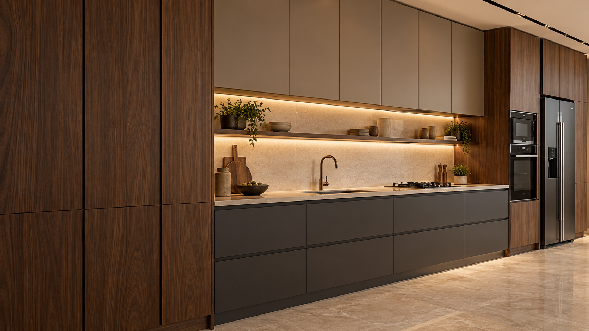
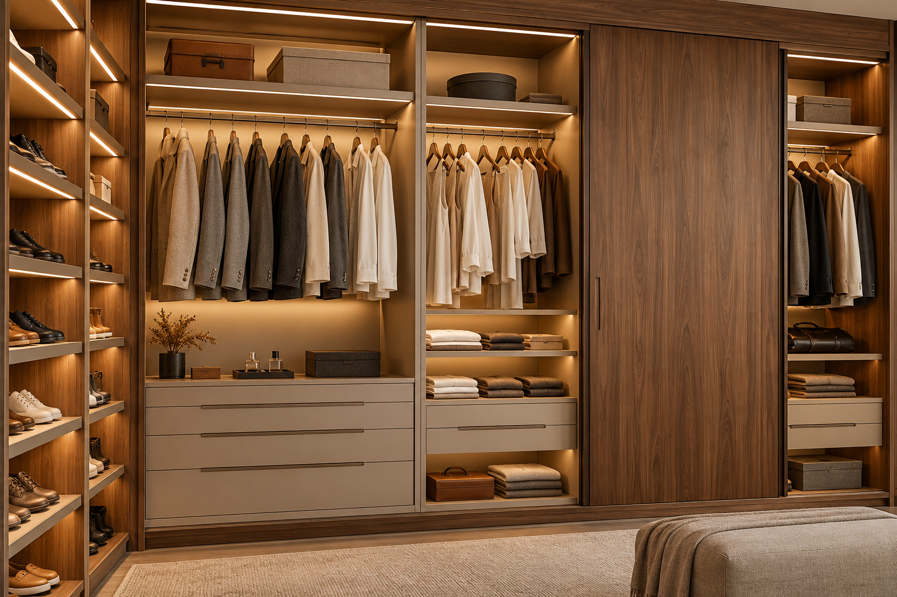

Necessidades e medidas
Defina os móveis que você precisa, o que vai guardar e as medidas disponíveis.

Cozinhas, armários, closets e painéis sob medida.
Marcenaria pensada para organizar, aproveitar e transformar.
Um armário que acompanha a parede. Gavetas que organizam a rotina. Uma cozinha em que cada módulo tem seu lugar. A Alex Ferreira é uma marca de móveis planejados: o ponto de partida é pensar o mobiliário de acordo com o espaço, as necessidades e o estilo de quem vai usar.
Conheça o caminho até seu novo ambiente ↗Portas, gavetas, nichos e módulos.
Veja o que pode ser planejado.
Conceitos ilustrativos de móveis planejados, gerados com IA. Não representam projetos executados pela Alex Ferreira.

Móveis planejados começam pelo uso: o que guardar, o que deixar à mão e como aproveitar a altura e a largura disponíveis. Portas, prateleiras e gavetas entram na composição junto dos acabamentos.
Portas e acabamentos
Amadeirados e tons lisos para compor as frentes dos móveis.
Divisões que organizam
Gavetas, nichos, prateleiras e cabideiros conforme a necessidade.
Aproveitamento do espaço
Módulos pensados para as medidas e os usos de cada ambiente.
Defina os móveis que você precisa, o que vai guardar e as medidas disponíveis.
Pense na posição dos armários, na abertura das portas e no acesso às gavetas.
Explore cores, frentes, puxadores e a organização interna dos móveis.
Converse com a Alex Ferreira para definir os detalhes e as próximas etapas do seu projeto.
Conte quais armários, painéis ou bancadas você imagina para o seu espaço.